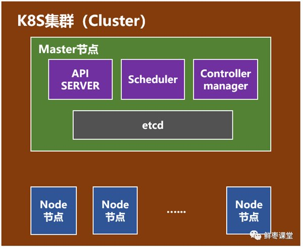
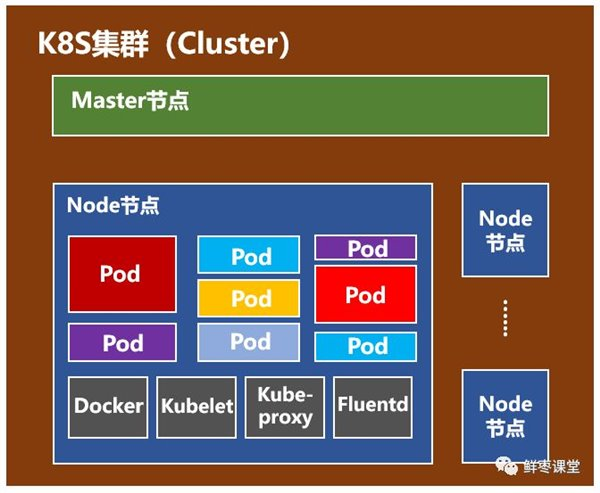
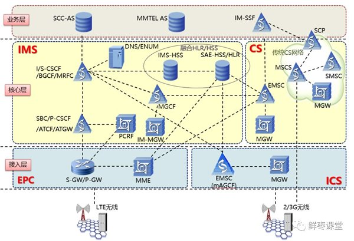
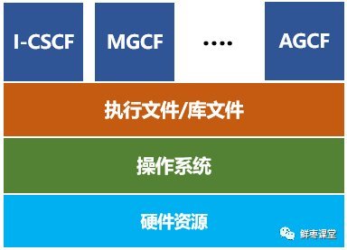

说完了Docker，我们再把目光转向K8S。
就在Docker容器技术被炒得热火朝天之时，大家发现，如果想要将Docker应用于具体的业务实现，是存在困难的——编排、管理和调度等各个方面，都不容易。于是，人们迫切需要一套管理系统，对Docker及容器进行更高级更灵活的管理。
就在这个时候，K8S出现了。
K8S，就是基于容器的集群管理平台，它的全称，是kubernetes。
K8s
k8s历史
Kubernetes这个单词来自于希腊语，含义是舵手或领航员。K8S是它的缩写，用“8”字替代了“ubernete”这8个字符。
和Docker不同，K8S的创造者，是众人皆知的行业巨头——Google。
然而，K8S并不是一件全新的发明。它的前身，是Google自己捣鼓了十多年的Borg系统。
K8S是2014年6月由Google公司正式公布出来并宣布开源的。
同年7月，微软、Red Hat、IBM、Docker、CoreOS、Mesosphere和Saltstack等公司，相继加入K8S。
之后的一年内，VMware、HP、Intel等公司，也陆续加入。
2015年7月，Google正式加入OpenStack基金会。与此同时，Kuberentes v1.0正式发布。
目前，kubernetes的版本已经发展到V1.13。
k8s的架构
一个K8S系统，通常称为一个K8S集群（Cluster）。
这个集群主要包括两个部分：
- 一个Master节点（主节点）
- 一群Node节点（计算节点）

- 一看就明白：Master节点主要还是负责管理和控制。Node节点是工作负载节点，里面是具体的容器。
Master节点

Master节点包括API Server、Scheduler、Controller manager、etcd。
API Server是整个系统的对外接口，供客户端和其它组件调用，相当于“营业厅”。
Scheduler负责对集群内部的资源进行调度，相当于“调度室”。
Controller manager负责管理控制器，相当于“大总管”。
Node节点

Node节点包括Docker、kubelet、kube-proxy、Fluentd、kube-dns（可选），还有就是Pod。
Pod是Kubernetes最基本的操作单元。一个Pod代表着集群中运行的一个进程，它内部封装了一个或多个紧密相关的容器。除了Pod之外，K8S还有一个Service的概念，一个Service可以看作一组提供相同服务的Pod的对外访问接口。这段不太好理解，跳过吧。
Docker，不用说了，创建容器的。
Kubelet，主要负责监视指派到它所在Node上的Pod，包括创建、修改、监控、删除等。
Kube-proxy，主要负责为Pod对象提供代理。
Fluentd，主要负责日志收集、存储与查询。
其他
核心网
核心网；简单点说，可以把移动网络划分为三个部分，基站子系统，网络子系统，和系统支撑部分比如说安全管理等这些。核心网部分就是位于网络子系统内，核心网的主要作用是把A口上来的呼叫请求或数据请求，接续到不同的网络上。
网元由一个或多个机盘或机框组成， 能够独立完成一定的传输功能。
网管系统中的网元其实和这个差不多，简单理解就是网络中的元素，网络中的设备。总之，网元是网络管理中可以监视和管理的最小单位，值得注意的是，网络元素与网元和被管设备是同义语，但被管设备容易被人误解成硬件。
从几十年前的1G，到现在的4G，再到将来的5G，移动通信发生了翻天覆地的变化，核心网亦是如此 。
所谓的核心网，其实本质上并没有发生改变，无非就是很多的服务器而已。不同的核心网网元，就是不同的服务器，不同的计算节点。
变化的，是这些“服务器”的形态和接口：
- 形态，从机柜单板，变成机柜刀片，从机柜刀片，变成X86通用刀片服务器；
- 接口，从中继线缆，变成网线，从网线，变成光纤。
就算变来变去，还是服务器，是计算节点，是CPU。
既然是服务器，那么就势必会和IT云计算一样，走上虚拟化的道路。毕竟，虚拟化有太多的优势，例如前文所说的低成本、高利用率、充分灵活、动态调度，等等。
前几年，大家以为虚拟机是核心网的终极形态。目前看来，更有可能是容器化。这几年经常说的NFV（网元功能虚拟化），也有可能改口为NFC（网元功能容器化）。
以VoLTE为例，如果按以前2G/3G的方式，那需要大量的专用设备，分别充当EPC和IMS的不同网元
- VoLTE相关的网元
- 
- VoLTE相关的网元
而采用容器之后，很可能只需要一台服务器，创建十几个容器，用不同的容器，来分别运行不同网元的服务程序。
- 
- 这些容器，随时可以创建，也可以随时销毁。还能够在不停机的情况下，随意变大，随意变小，随意变强，随意变弱，在性能和功耗之间动态平衡。
5G时代，核心网采用微服务架构，也是和容器完美搭配——单体式架构（Monolithic）变成微服务架构（Microservices），相当于一个全能型变成N个专能型。每个专能型，分配给一个隔离的容器，赋予了最大程度的灵活。
精细化分工
按照这样的发展趋势，在移动通信系统中，除了天线，剩下的部分都有可能虚拟化。核心网是第一个，但不是最后一个。虚拟化之后的核心网，与其说属于通信，实际上更应该归为IT。核心网的功能，只是容器中普通一个软件功能而已。